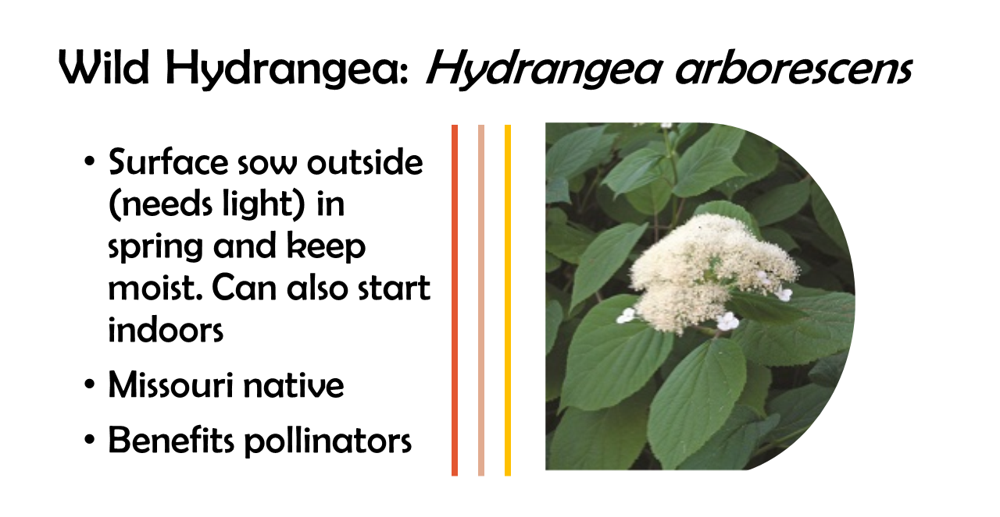
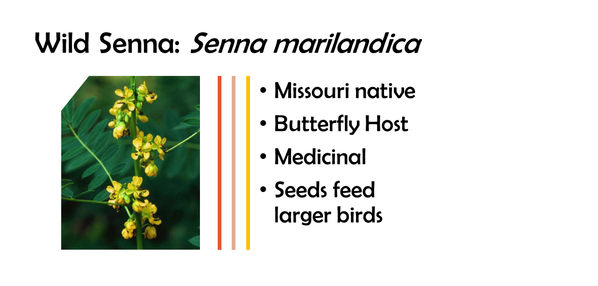
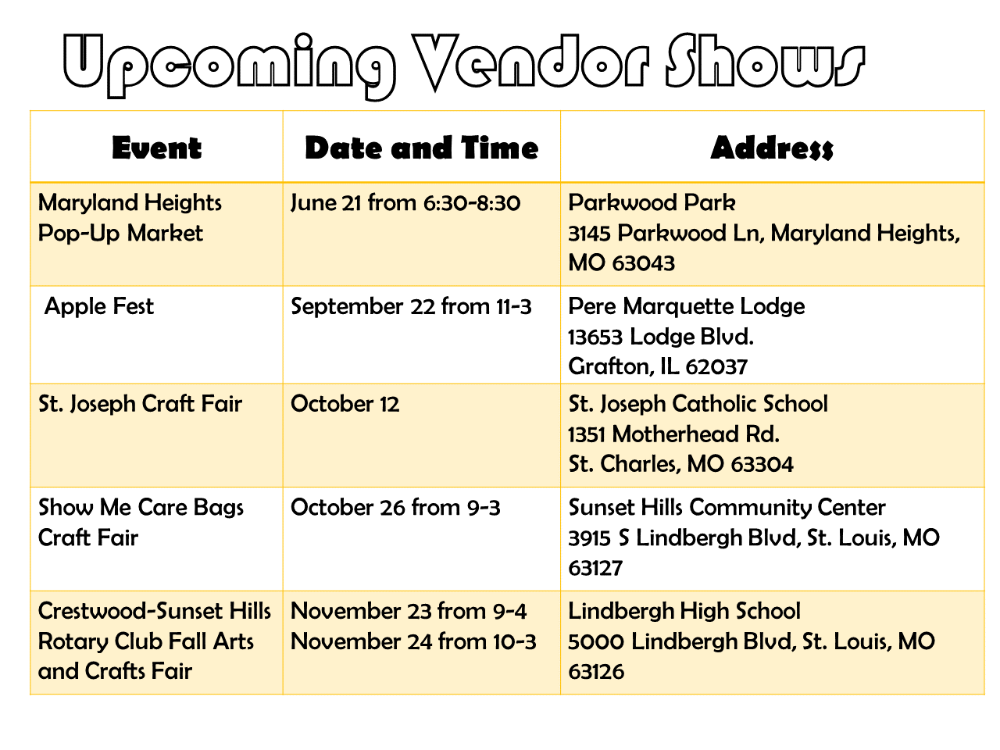

More on Purple Cone Flower from Missouri Grow Native
More on Purple Cone Flower from Missouri Grow Native
Research Article on Medicinal Use of Coneflowers
More on Columbine from Missouri Grow Native
More on Jacob's Ladder from Missouri Grow Native
More on Lanceleaf Coreopsis from Missouri Grow Native
Research Article on Medicinal Use
More on Rose Mallow from Missouri Grow Native
More on Bush's Poppy Mallow from Missouri Grow Native- Contender #1
More on Fringed Poppy Mallow from Missouri Grow Native- Contender #2
More on Cardinal Flower from Missouri Grow Native
More on Bee Balm from Missouri Grow Native
More on River Oats from Missouri Grow Native
More on Shining Blue Star from Missouri Grow Native

More on Wild Hydrangea from Missouri Grow Native

More on Wild Senna from Missouri Grow Native

Maryland Heights Pop-Up Market
Pere Marquette Lodge
St. Joseph Craft Fair
Show Me Care Bags Craft Fair
Crestwood-Sunset Hills Rotary Club Fall Arts and Crafts Fair